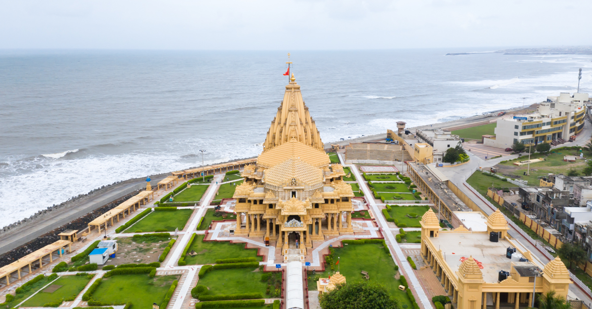

Description:Somnath Temple is the first among the twelve Jyotirlinga shrines of Shiva. It has been destroyed and rebuilt multiple times due to its strategic location and historical richness. Today, it stands as a symbol of resilience and spiritual pride.
Location: Prabhas Patan, Gujarat
Timings:6:00 AM – 9:00 PM
Rating:⭐⭐⭐⭐☆ 4.7/5
Visitor Info for Somnath Temple :
Nearby Places: